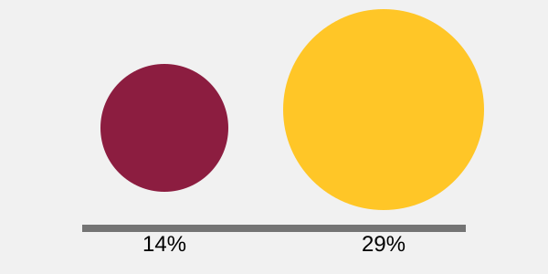

1 · External content image

This SVG is a content image: it carries meaning, so it needs a text alternative. It is embedded
with <img> and a descriptive alt that stands in if the file ever fails
to
render.
2 · Inline, styleable graphic
This SVG is inline, so CSS can style its internals. It is given a programmatic
name (<title>) and description
(<desc>) linked through aria-labelledby.
3 · Decorative background
Design mock-up review in progress — nothing depends on the graphic behind this panel; the meaning lives entirely in this text.
Method comparison
| Method | Best use | Styling reach | Alternative strategy |
|---|---|---|---|
img |
TODO | TODO | TODO |
| Inline SVG | TODO | TODO | TODO |
| CSS background | TODO | TODO | TODO |